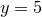
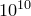

By default, PyXPlot places a series of tick marks at significant points along each axis, with the most significant points being labelled. Labelled tick marks are termed major ticks, and unlabelled tick marks are termed minor ticks. The position and appearance of the major ticks along the x-axis can be configured using the set xtics command, which has the following syntax:
set xtics { axis | border | inward | outward | both }
{ autofreq
| <increment>
| { <minimum>, } <increment> { , <maximum> }
| ( {"label"} <position>
{ , {"label"} <position> } .... )
}
The corresponding set mxtics command, which has the same syntax as above, configures the appearance of the minor ticks along the x-axis. Analogous commands such as set ytics and set mx2tics configure the major and minor ticks along other axes.
The keywords inward, outward and both are used to configure how the ticks appear – whether they point inward, towards the plot, as is default, or outwards towards the axis labels, or in both directions. The keyword axis is an alias for inward, and border an alias for outward.
The remaining options are used to configure where along the axis ticks are placed. If a series of comma-separated values <minimum>, <increment>, <maximum> are specified, then ticks are placed at evenly spaced intervals between the specified limits. The <minimum> and <maximum> values are optional; if only one value is specified then it is taken to be the step size between ticks. If two values are specified, then the first is taken to be <minimum>. In the case of logarithmic axes, <increment> is applied as a multiplicative step size.
Alternatively, if a bracketed list of quoted tick labels and tick positions are provided, then ticks can be placed on an axis manually and each given its own textual label. The quoted tick labels may be omitted, in which case they are automatically generated:
set xtics ("a" 1, "b" 2, "c" 3)
set xtics (1,2,3)
The keyword autofreq overrides any manual selection of ticks which may have been placed on an axis and resumes the automatic placement of ticks along it. The show xtics command, together with its companions such as show x2tics and show ytics, may be used to query the current ticking options. The set noxtics command may be used to stipulate that no ticks should appear along a particular axis:
set noxtics show xtics
A plot of the function .
In this example we produce a plot illustrating some of the crossing points of the function . We set the x-axis to have tick marks at , , |
set log x1x2 |
 and
and  . The x2-axis has custom labelled ticks at
. The x2-axis has custom labelled ticks at  , etc., pointing outwards from the plot. The left-hand y-axis has tick marks placed automatically whereas the y2-axis has no tics at all.
, etc., pointing outwards from the plot. The left-hand y-axis has tick marks placed automatically whereas the y2-axis has no tics at all.